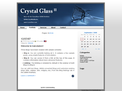

Skin Name: Crystal Glass II Skin
Description: Crystal Glass II is the modern successor off Crystal Glass - designed for Simplicity, Elegance, and Beauty. I rewrote it for the b2evolution community because after forgetting about it for 2 years I realized several people enjoyed it, If you'd like to see more themes I'd love to make more upon request to Loren @ LorenDias.com, Rose On The Dance Floor by 'Andidas
b2evo Version: 2.x
Design By: Loren @ DiasWebWorks
Tags: black, gray, white, blue, 2-columns, right sidebar, widget ready, rose, crystal glass, elegant, simple, seo friendly
"If you don't conquer your fears your fears will conquer you" ~ Ryan Dias